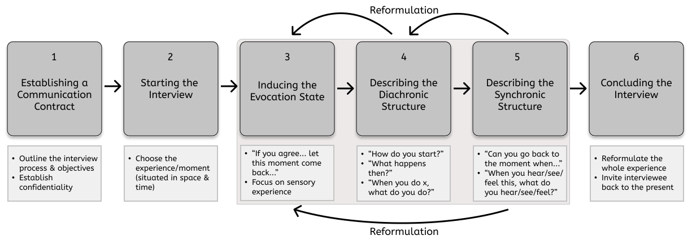
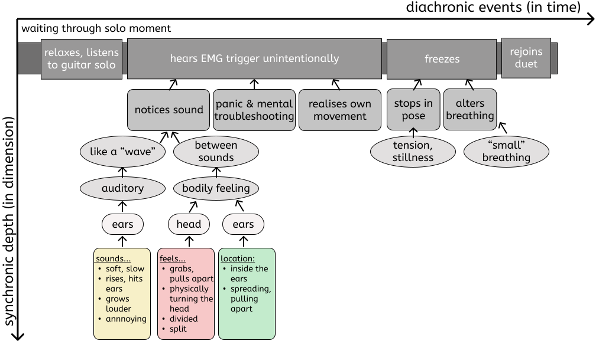
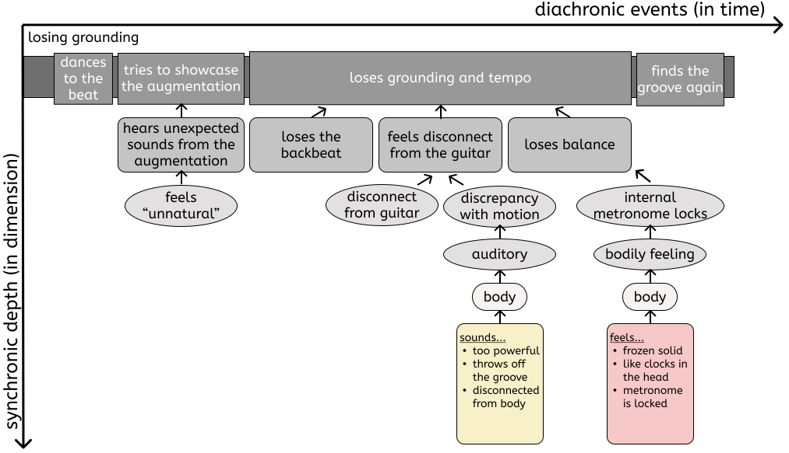
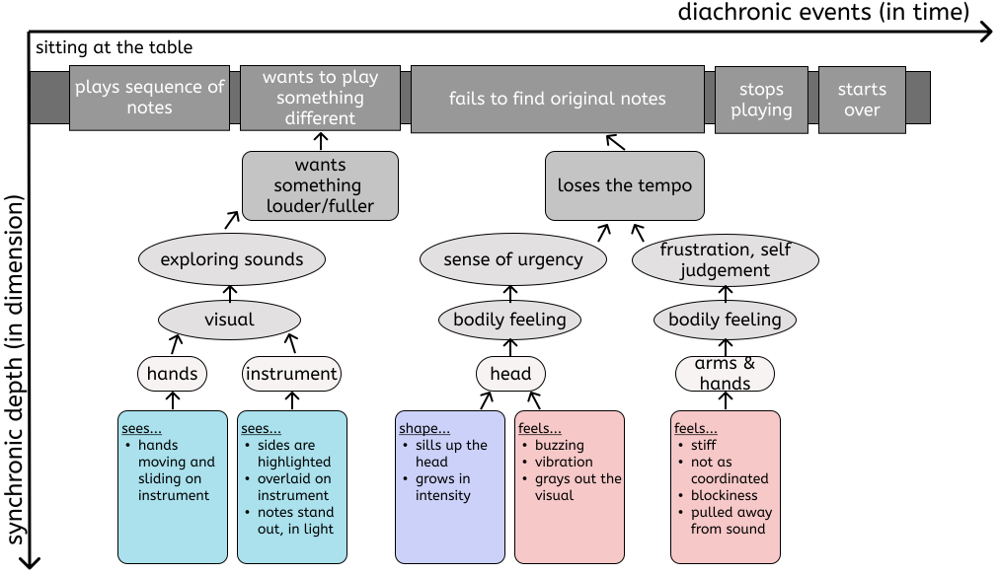
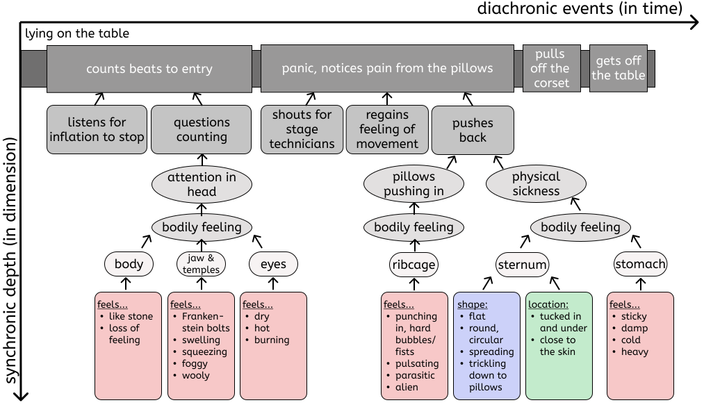
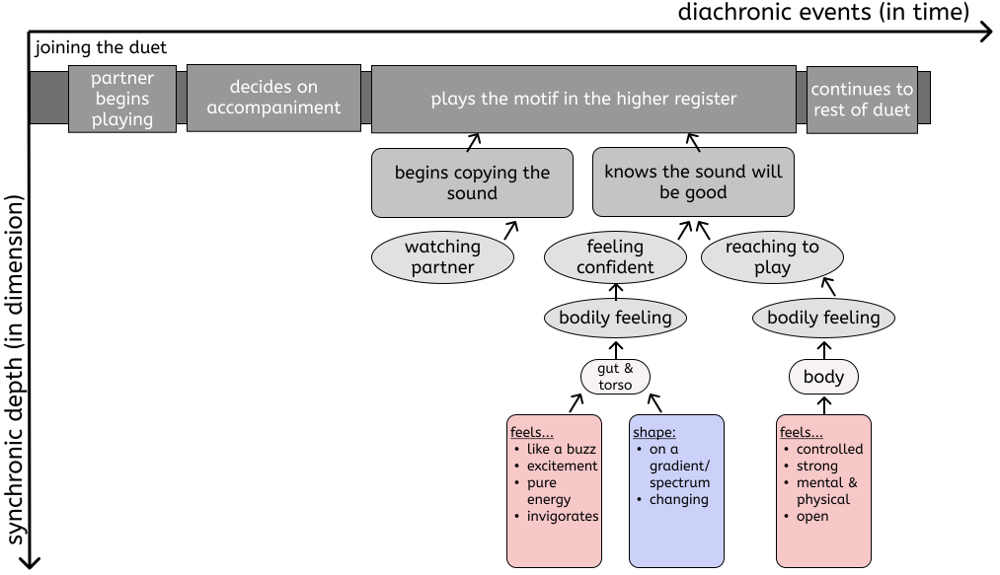

Exploring Experiences with New Musical Instruments through Micro-phenomenology
Abstract
This paper introduces micro-phenomenology, a research discipline for exploring and uncovering the structures of lived experience, as a beneficial methodology for studying and evaluating interactions with digital musical instruments. Compared to other subjective methods, micro-phenomenology evokes and returns one to the moment of experience, allowing access to dimensions and observations which may not be recalled in reflection alone. We present a case study of five micro-phenomenological interviews conducted with musicians about their experiences with existing digital musical instruments. The interviews reveal deep, clear descriptions of different modalities of synchronic moments in interaction, especially in tactile connections and bodily sensations. We highlight the elements of interaction captured in these interviews which would not have been revealed otherwise and the importance of these elements in researching perception, understanding, interaction, and performance with digital musical instruments.
Author Keywords
Micro-phenomenology, interview, subjective methods, experience, perception, interaction, performance study
CCS Concepts
Applied computing → Performing arts;
Human-centred computing → Empirical studies in HCI; HCI theory, concepts and models;
Introduction
Our research draws on the scientific discipline of micro-phenomenology, developed by Claire Petitmengin [1]. Micro-phenomenology has evolved from neuroscience practices [2] to investigate dimensions of sensory perceptions [3][4]. The discipline builds on Varela’s work in centring the human in experience [5][6][7], Vermersch [8] and Depraz’s creation and employment of an interview method for investigating professional practices [9], and the work of Petitmengin in structuring lived experiences [1][10].
NIME (New Interfaces for Musical Expression) research draws on a variety of domains, including composition [11], design [12], human-computer interaction (HCI) [13], and engineering [14]. Digital musical instruments (DMIs) are examined through musicology [15], social sciences [16], cognitive science, and performance studies [17]. This article aims to expand the heterogeneous body of NIME research by proposing a contribution that focuses on musicians’ lived experiences while interacting with musical interfaces.
We suggest micro-phenomenology as a practice to gather descriptions of lived experience in the context of DMI performance. We reference Shear and Varela’s “lived experience” as an account of the “self” or the “subject” [2]. First-hand lived experience is the source “we start from and where all must link back to, like a guiding thread” [7]. In line with research on cognition and self-perception, our work moves from the acknowledgement that parts of our subjective experience unfold unnoticed. Micro-phenomenology explores pre-reflective dynamics [1][18]; that is, perceptions which occurred during the initial experience but are inaccessible upon reflection.
We outline the micro-phenomenological interview process and how the method reveals fine details of experience. Then, we introduce existing literature in HCI which uses micro-phenomenology. We connect this background to NIME and related instrument design and research practices, such as somaesthetics. We outline a micro-phenomenology inspired case study of interaction with DMIs, which analyses the finely-grained awareness in an experiential act. We intend to show the benefit of the micro-phenomenology discipline in NIME research to reveal tacit factors and behaviours that might be otherwise overlooked or difficult to learn.
Background
During daily life, sensory perceptions occur rapidly, and we are not immediately aware of all of the elements of our experiences. Micro-phenomenology1 helps uncover the hidden dimensions of experience by zooming in on a precise moment during an interview [1]. A trained micro-phenomenologist2 helps bring the interviewee back into the experience through an evocation. The interviewee becomes a co-investigator in recounting and refining their experience and dimensions. The interviewee is invited to explore the diachronic structure (the entire experience chronologically) and synchronic elements (dimensions in a clear-cut moment) of the experience. Synchronic details form the “landscape” of an experience, while diachronic details depict that landscape’s evolution [19].


Figure 1. The micro-phenomenological interview process. Adapted from Petitmengin [1][19].
A micro-phenomenological interview involves six steps (Figure 1). The micro-phenomenologist begins with a communication contract that outlines the process and establishes confidentiality. The interviewee does not have to share aspects of their experience unless they wish. The interviewer leads the interviewee through outlining the diachronic structure and then brings the interviewee to a specific moment to develop its synchronic dimensions. Questions are intentionally broad or open to individual interpretation (e.g., When you feel this, what do you feel?): the interviewer must only ask about how the experience happened without leading, not why [20] something happened, to avoid derailing the re-living. Following each response, the interviewer reformulates and repeats the words and explanatory gestures [21][22][23] back to the interviewee. Reformulations are done to maintain the evocation and ensure the parties’ understanding is correct, giving the interviewee a chance to correct any part of the description. In addition, reformulation helps to integrate the synchronic and diachronic aspects back into the whole experience [19]. The interview concludes with a recapitulation of the experience and an invitation to leave the evocation and return to the present moment. It is common to debrief the interviewee and discuss the evocation experience.
The data provided by the interviewee is from a second-person perspective (2PP). The micro-phenomenologist gathers the interviewee’s evocation and description of an experience. The structure is different from typical third-person perspectives (3PP), gathered in observational practices such as quantitative measurement, or first-person perspectives (1PP), such as those collected in reflective journaling or auto-ethnographic methods. The 2PP can be thought of as narration; the interviewer conveys the interviewee’s experience (i.e., the author’s analysis of another’s 1PP), offering balance to the subjective and objective components of 1PP and 3PP [2][1]. Micro-phenomenology also gathers descriptions of pre-reflective experience from different perspectives [24]. The reliability of micro-phenomenological descriptions as pre-reflective experiences has been considered within the psychological community [3][25] and alongside other disciplines such as neurology [26]. This intersubjective validation of experiences [27][3] is possible through generic and regular structures of experience found in analysis [1][19].
Micro-phenomenology in HCI
Micro-phenomenology is gaining interest in HCI research, especially within Third Wave HCI [28]: a shift from task-based to experience-based computing, a focus on the underlying value of embodiment, and the philosophical understanding that cognition is enacted as a consequence of the body and the physical environment around it [29]. The embodiment-focused work of Varela [30][2] and Vermersch [8], which led to a defined micro-phenomenological method, is based on the phenomenological perspectives of Heidegger [31], Husserl [32][33], and Merleau-Ponty [34][35]. Phenomenology practices have been used in design to highlight the role of the individual perception of experience and the designer’s body in interaction [36], similarly to how micro-phenomenology investigates the body as a source of meaning [37]. Our awareness of interaction is shaped through our bodies and our understanding of them [38][39].
Embodiment is useful in shaping design [40] and working with interactive systems through tacit knowledge [41]. The pre-reflective experiences explored through micro-phenomenology connect to this tacit knowledge [42][20]. This is context-specific [43][44] and rooted within the body, and is therefore often difficult to describe in words [45]. The attention to previously unrecognised aspects of lived experience is also a pillar of work highlighting the existence of bodies, each with their own individual experiential “mess” [46][47]. These tacit dimensions of experience are also linked with elements of entanglement, the interdependencies between human and computer which shape technology’s development and our interaction with it [48]; interaction with the body and subjective experience with technology are entangled and continually shape each other [49][50]. Micro-phenomenology has been used in HCI as an alternative to the quantified self paradigm: rather than measuring parts of human experience, technology is embraced as a source for change in attitudes and behaviour [51][52]. Micro-phenomenological interviews are shown to remove elements that detract from the focus of the interviewee’s experience [53][42]. It also aids the development of a vocabulary for embodied dimensions of knowledge [54][55].
The NIME community has also been recently introduced to somaesthetic design [56], the practice of causing an awareness of one’s bodily experience, for instance by changing or disrupting habitual behaviours [57]. Micro-phenomenology presents an excellent companion to somaesthetics in embodiment and pre-reflective experience [29]. Focus on movement [58] and the body is used to understand the properties of interaction for design [59][60][61]. Soma design, like micro-phenomenology, relies on an embodied philosophy of interaction with the physical world [29]. However, it designs experiences to examine; micro-phenomenology instead provides a tool for investigating prior experiences. We, therefore, propose micro-phenomenology as an appropriate companion to embodiment-based practices such as somaesthetics in design and interaction study, and a relevant discipline for NIME.
Micro-phenomenology for NIME: The Body Beyond Reflection
Phenomenology has made its way into DMI design and NIME research by describing the entanglement between instrument, body, and consciousness in Armstrong’s enactive instruments [62] and Nijs’s instruments as extensions of the self [63]. A phenomenological framework was also applied to performance by Buttingsrud to describe embodied reflection in dancers [64]. NIME research has used subjective quantitative methods, e.g. self-evaluations like questionnaires or rating scales, to evaluate expressivity [65], usability [66], and creativity support [67]. Additionally, qualitative methods have been used, e.g. soma design [57] and DMIs as phenomenological probes [68]. Data on such experiences has been primarily gathered through self-reflection [69] or semi-structured interviews [70][71].
A critical look at reflective accounts in open-ended interviews in HCI [42] and NIME [70] highlights how the reflection of an experience in its entirety is often biased towards the participant’s expectations and a-posteriori rationalisation. This is detrimental to the findings’ accuracy and repeatability. On the other hand, micro-phenomenology collects pre-reflective experience and in-the-moment cognition and is more robust against a person’s biases and expectations [3][4].
We advocate for micro-phenomenology to be applied as a part of a broader effort to bring focus back to bodies in NIME. This acknowledges the changes advocated for in HCI by Homewood et al. [50] and Spiel [46], whereby the body is seen as continuously entangled with technology through performance and reaction to the environment. Instrumental space and idiomaticity [72], respectively a musical instrument’s set of most natural affordances and the idioms that arise, could include the relationship with each performer’s body. Micro-phenomenology allows for investigating the performer’s embodied relationship with a tool in the moment, without ad-hoc probes other than the existing instrument.
Finally, micro-phenomenology can help to understand the structures behind push and pull effects, part of Tuuri’s model of experiential control [73]: What is happening in the moment of feeling in control? When you feel in control, what do you feel? What do you feel when you lose a sense of control/feel controlled? Understanding generic structures and correlating such effects with the learnability and motivation to develop skills on a DMI could create pathways for NIME longevity [74][75].
Method
We present a case study of five interviews with musicians using DMIs. As the interview process is a co-investigation, with the interviewer acting as a facilitator for the interviewee’s exploration, the interviewees were invited to co-author this paper. The authors provided their autobiographic reflections of being interviewed alongside the 2PP analyses done by the interviewers, as a first-person account of their experience being interviewed and how this benefits their understanding of their own experience [76][77].
Charlotte and Courtney, who have completed micro-phenomenology training, conducted the interviews. Using micro-phenomenology inspired methods, Courtney, Andrea, Eevee, Kelsey, and Lia, five musicians currently active in the NIME community, were interviewed. Charlotte interviewed Courtney, Andrea, and Eevee; Courtney interviewed Kelsey and Lia. In addition to Courtney, who was both interviewer and interviewee, Eevee, Giacomo, and Nicole, have undertaken interview training and have prior experience with the process.
Interviews were conducted over remote audio-video calls3. The interviewees were briefed on the process and then were invited to begin the micro-phenomenological inspired interview. First, the micro-phenomenological communication contract was established [1], ensuring that the interviewees knew that they should focus on what was happening during their experience and not why. Due to potentially sensitive aspects of experience, the interviewees did not have to share anything they felt uncomfortable sharing and could end the study at any time. With the communication contract established, the interview and evocation of the experience began. All audio-video recorded interviews lasted approximately 1 hour, followed by approximately 30 minutes of debriefing.
It is important to note that the context of the performance or the instrument is not needed for the interview. In a micro-phenomenological setting, this can bring assumptions into the moment or bias the interviewer. The focus of the interview is about the experience; therefore, we do not observe or review the experiences prior to the interview, nor include additional information about the instruments in the analysis. References to the NIMEs and available demo videos are included here for only readers’ reference.
The time between experience and interview is not a limiting factor because the goal of the interview is to evoke the “precise spatio-temporal context… to the point that the past situation becomes more vivid for her than the present situation is” [19]. The interview examines details of an experience which are not immediately accessible, so the ability for the interviewee to describe it reflectively is also not a confounding factor and does not predict the detail which will be uncovered [19]. Therefore, the musicians were able to choose any experience with their DMIs that they wished to explore.
Analysis
The recordings were transcribed at the level of utterances. The question and answer pairs were numbered. The descriptive statements were labelled to identify satellite dimensions [78] - these are related dimensions that occur in memory but deviate away from the specific experience being evoked. This is indicated often by use of the generic second-person “you,” or by the alternation of past instead of present tense. Micro-phenomenological analysis focuses on the specific evoked experience, so satellite dimensions are noted and discluded from the structure.
Using the transcriptions, Charlotte and Courtney (referred to henceforth as “we”) identified and summarised the different structures of each experience, presented subsequently. From established micro-phenomenology analysis methods [19][51][78], we analyse and report here the main structures of the experiences explored with the authors. We iteratively review the description of the experience [78] and focus on the salient points which arise from the interviews, particularly the dimensions of experience that would not have been captured without this inspired practice, to demonstrate the benefits of the discipline to NIME. Each experience is depicted in a figure demonstrating the diachronic timeline and the synchronic details uncovered during the interview. These reveal details about the auditory (yellow), visual (blue), and kinesthetic perceptions (red), and details such as the shape (purple) and location (green) of sensory experiences.
Interviews
Courtney: EMG for Singing Voice
Courtney and Andrea performed a duet together with their new augmented instruments. Courtney augmented her singing with an electromyography (EMG) system she designed [79][80], for the first time in a duet setting4. The moment of the system’s sound design interrupting Andrea’s solo performance is explored (Figure 2).


Figure 2. The diachronic experience and synchronic exploration of Courtney noticing the system’s sound.
The experience begins with Courtney taking a step back from the duet for Andrea to have a solo moment. Courtney has her head turned slightly towards Andrea and notices him getting into the performance. At one point, Courtney hears the sound design from the EMG system. The sound is like a “wave,” starting quietly and suddenly hitting her. She panics; she is not singing, so the system should not trigger. She goes through a mental checklist of why the system is triggering and realises that her tiny movements while listening to Andrea are the cause. Courtney immediately freezes and changes her breathing to eliminate all movement.
We explore the moment of realising the interruption by the sound design in greater detail. Courtney describes the sensation as “almost like something grabbing and kind of pulling open [..] pulling my attention and so it starts to spread between these two places [..] the feeling that I have kind of inside where I’m hearing in my ears, it starts to be actually pulled away and towards these two different sound sources [..] it’s the sensation of now I’m completely like ripped, ripped apart or divided in half and I’m no longer focusing a lot on either of them - there’s too much of a divide and I’m hearing both things at the same time.”
Andrea: Augmented Guitar
Andrea explored a moment in the performance with Courtney where he lost his grounding in the beat. Andrea performed with his augmented percussive fingerstyle guitar [81][82] for the first time (Figure 3).


Figure 3. The diachronic experience and synchronic exploration of Andrea losing his grounding.
Andrea stands side by side with Courtney. His back is curved on the guitar, and he is slightly “dancing” to the beat. He feels the backbeat in both his hand and body. As he grounds himself in the beat, he wants to showcase the augmentation, but the sound is unexpected.
The groove is lost, his body becomes rigid, and he “didn’t know how to move.” His internal metronome, swinging back and forth, locked. When asked about where the tension is felt, Andrea talks about his shoulders and describes the shoulder frame’s importance for guitar players. As he uses general terms and 2PP (potentially a satellite dimension of the evoked experience), it is unclear if this tension occurred when we explored the experience together. However, Andrea’s body posture changes during the evocation: “I’ve actually experienced [the moment] as I was talking. [..] Before, I was actually quite relaxed with my body [..], and then now I’m leaning forwards from the chair, being really tense.”
Eevee: FM-Synthesis Percussion
Eevee explored a moment of playing their instrument, NEP7UNO, earlier in the day of the interview5. They wanted to examine a moment of exploring the instrument, where they play a series of notes a few times and then move on to play something different (Figure 4).


Figure 4. The diachronic experience and synchronic exploration of Eevee’s experimenting.
They start by playing a sequence of notes a couple of times: “I play the sides of the instrument that are equally spaced apart [..] I know that may sound well.” During this interaction, there is a constant “wish for the sound to be a bit louder and fuller.” Eevee explores the different nuances of the sounds. They think ahead of what to play next. The instrument is relatively new to them, and they do not yet have a mental model of playing it, so they think about different patterns to play. This pattern manifests itself as a mental visual overlay on the instrument itself, where the sides of the instrument they want to play next are “highlighted.”
There is a growing bodily sensation of urgency, “like a buzz in my head.” The feeling starts subtly and builds as the moment of changing sequences approaches. The two experiences (mental image and buzzing sensation) overlap and are at the same level of intensity. The bodily sensation eclipses the mental images: “… it’s like it greys out, it kind of bursts the mental image.” Eevee loses tempo and goes out of beat as a consequence, but continues to play. They feel self-judgment, like they have let themself down. Eevee has a sensation of stiffness or blockiness in their arms and hands of not being as coordinated as they wish. To overcome this stiffness, they focus on the interaction with the instrument and the sonic qualities: “… the sounds would be sort of like pulling you away from that sensation and into the experience of playing.”
Kelsey: The Body Electric, a Breathing Wearable
Kelsey chose a moment during her first recording with the Body Electric [83], a wearable corset that uses a series of pneumatic sensor-actuator pillows which respond to the breath while singing6. The experience was centred around a malfunction in the instrument (Figure 5).


Figure 5. The diachronic experience and synchronic exploration of two moments in Kelsey’s interaction.
Kelsey lies on a table on the dark stage and counts beats until her entrance. She listens to the sound of the pillows inflating and waits for the sound to change, signalling they are done inflating. This sound does not come, and Kelsey considers that she miscounted; after a few more beats, she realises the pillows continue to inflate. Kelsey notices how tight the corset is becoming and shouts for the stage technicians to stop the system. Fearing that either the pillows will explode or cause injury, Kelsey rolls over, rips off the corset, and gets off the table. Kelsey is left with a sense of “betrayal” by the instrument.
Kelsey’s realisation of the malfunction is explored, revealing that “all of my attention is in my head. And that my head is the only thing that exists and is completely separate from the rest of my body [..] everything’s just getting smaller and smaller and tighter and [..] the inside, like blurry fog, is just starting to swell.” The physical sensation is associated with perceiving the pillows as living “alien” objects or “parasites.” Kelsey experiences “just how disturbing it was to feel these pillows pulsating against me [..] like they have a heartbeat and this organ that’s lying on you.” This experience takes on physical sickness in the stomach and under the sternum. Kelsey feels this in her torso with a defined shape: “… it’s very kind of circular and round [..] starting to trickle in through all of my muscles, and under my skin and it’s slowly starting to spread. And it’s reaching towards all of the pillows.”
Lia: Chaos Bells, a Large-Scale NIME
Lia’s experience involved recording a performance with the instrument [84][85] with her partner, Alex7. The chosen experience examined an element of synchronisation in the duet (Figure 6).


Figure 6. The diachronic experience and synchronic exploration of Lia joining the duet performance.
Lia stands next to Alex inside the large instrument and hears the low-pitched drone of Alex’s playing at the other end. Lia is initially unsure how to structure the duet, but copies this drone in the instrument’s higher register as an accompaniment. She mimics very softly with a slow attack, trying not to “bust in there” on top of what is being played currently. Lia feels “cheeky” doing this, as Alex does not realise. At the end of this entry, Lia knows she has made the right decision, which results in a performance that feels and sounds good. She feels confident about her skill on the instrument and continues with the performance.
The moment explored is when Lia realises that her improvised entry to the duet is a “genius idea [..] it is going to sound really good.” Lia describes this moment as “like a buzz [..] sort of like surrender.” In a satellite dimension explored during the conversation, Lia identifies this as a “flow state, you’re feeling not self-conscious at all, you’re not thinking about how your body looks or, or anything, you’re just in tune with the sounds that are coming out.” In this particular experience, “it’s more like a body feeling than a head feeling,” and that this feels “invigorating [..] like a pure energy.” This results in a feeling of “control”, and Lia notes that “my body is feeling strong because I have to do these strong movements. But I’m also feeling mentally confident, and enjoying the sounds at the same time.”
Discussion
As seen in the case study, micro-phenomenology inspired practice provides a fine-grained account of experience. In an autobiographical study and reflection, we were able to identify the diachronic experience and the synchronic dimensions of individual moments. Interviewees uncovered bodily feelings, auditory and visual elements, down to details of sensations such as location and size. These were often tied to affective states, such as panic, confidence, and self-judgement.
Pre-reflective Experiences in Performance
In the interviews in our case study, all interviewees explored a short moment in time, lasting no more than 1 minute. Eevee’s diachronic description of the moment is: “I play the sequence of notes, maybe a couple of times. And then I want to play something different. And when I found it, I then tried to go back to what I was playing.” The moment in bold is the only one explored throughout the one-hour session. Guidance into synchronic dimensions of this moment reveals how mental imagery and visualisation play a part in deciding what to play next. However, Eevee mentions they do not yet have a mental model of their instrument, suggesting they use a different strategy for improvisations with more familiar instruments. They also experience a buzzing sensation in their head that eventually grows so intense that they lose their tempo and get caught in emotions of self-judgement and feeling uncoordinated. These details were absent from the initial description of the experience, which was made reflectively and not in-the-moment.
Experiential Modalities and Embodiment with DMIs
Some of the musicians identified more than one modality in their experience. There were few auditory references (except for Lia) and only some mention of visual images (Andrea, Eevee). Cross-modality in perception and performance in musicians is widely studied in cognitive science [86]. However, the explorations were heavily focused on bodily sensations; at least for these musicians, this is a critical part of their perception. This observation highlights the contribution of embodiment in interaction with DMIs.
In Courtney’s experience, the interview uncovered a visceral physicality of having her attention pulled away towards something “going wrong” with her system. Her descriptions of the experience were mainly based in the visual and bodily domains. When describing the sensation of hearing the “wrong” sound of her device, she describes the locality of the sound “inside the ear” and its effect, rather than the sound itself. Additionally, we see the characterisation of instruments as part of the self or as other. Lia’s powerful movements with the instrument create feelings of power and self-confidence, which carry on into her performance. On the other hand, from Courtney’s and Kelsey’s experiences, there is a state of disconnect when the instruments behave in an unintended way [63]. Both DMIs rely on biosignals from the performer’s body, but this disconnect results in feelings that the instruments have become “alien” or somehow uncontrollable. Even though the body is controlling the DMI, Courtney and Kelsey feel that the DMI ends up controlling their bodies [73].
Interviewee Reflections
The debriefing allowed the interviewees to elaborate on how they felt during the interview process. One topic which arose was the ease of describing tacit knowledge, which is difficult to discuss in reflective accounts of experience [87]. Andrea found it easier to describe their experience once they were in an evocative state. Eevee however was frustrated while describing their sensations and felt that finding words for such a specific expert practice was much harder than describing everyday situations.
Andrea and Eevee reported going in and out of the evocation several times, which the interviewers also noted through the presence of satellite dimensions in their descriptions. Conversely, Kelsey was “surprised by how fresh everything still is in my mind and how viscerally my body reacted as well.” Kelsey described the interview process (her first experience with micro-phenomenology and being interviewed) to “go back and acknowledge these feelings and the sensations” as a kind of “time travel.” Her description eloquently captures the point of micro-phenomenology:
“[Before the interview] I could remember everything that had happened in that morning, right up to that point, and it’s like it’ll happen on fast-forward [..] [In the evocation] I didn’t expect to feel the drape under my body again, I really feel the lights and feel the heat of them [..] how the air in the room tasted like, all of that came back to me. And then, my body started reacting not to the full scale where I was experiencing that at 100% capacity [..]. But it’s a 20 or 30% sensation where I could feel it happening.”
We see here specific details about sensory experience that remained unacknowledged before the interviews. Along with Kelsey, Andrea reported re-experiencing feelings of tension during the evocation. Micro-phenomenology thus presents a way to explore these emotional, visceral qualities of interaction that impact our relationship with our tools.
Further Research & Applications
It is important to note that the case study did not focus on a particular research question. There are moments in each of the interviews which could have been explored but were not. This is typical of a micro-phenomenological interview, where only one or two synchronic dimensions are able to be explored. In further studies with explicit research questions, an interviewer can focus the exploration accordingly [19].
The experiences explored here represent broader categories of interaction with DMIs (e.g., duets, troubleshooting). In particular, we find the moments of friction between performer and instrument or performers’ frustrations with themselves intriguing. Potential research questions include What are the generic structures behind these slip-ups and disconnections? Similarly, What is the musicians’ pre-reflective understanding of their strategies to reconnect with the performance? Micro-phenomenology could offer further insight into the investigation of the error in musical performance. This could add to the understanding of an audience’s perspective on error, explored by Bin et al. [88].
Limitations & Considerations
It is important to note current inaccessibility of micro-phenomenology training. We refer to this work as “micro-phenomenology inspired.” This is because Charlotte and Courtney are still in training, and are not certified micro-phenomenologists. The training works like an apprenticeship or luthiery. This poses considerable financial (800-1600€) and time costs (80+ hours of training and supervised interviews) to the researcher. These are high due to the intensity of the course and a limited number of micro-phenomenologist supervisors. While the time requirement is necessary to learn and correctly apply the discipline, it may be hard for some researchers to commit to the training due to work or care responsibilities. The financial cost poses inaccessibility to researchers without funding or available support from their institutions.
It is our hope that, by generating interest in micro-phenomenology, the entry barrier can be lowered. As with any new method or discipline, time and dissemination of knowledge into communities will increase general accessibility. Collaboration with the psychological community will produce more supervisors who can work and lead trainings specifically within NIME (e.g., micro-phenomenology workshops and interview practice at the NIME conferences) and lead to interdisciplinary work with other micro-phenomenologists.
In use, micro-phenomenologists might find that some people are potentially less responsive to this method or find it challenging to reach evocation states. There are some differences even amongst these five interviewees on level of detail in evocation. The responsiveness of an interviewee or their ability to describe experiential states might depend on their engagement in other meditative practices [89][90] or cultural and social differences. Additionally, the achievement of the evocative state depend on the interviewer’s experience and time studying the discipline.
Even though micro-phenomenology focuses on pre-reflective experience, describing embodiment is still difficult to do [45]. It is challenging to provide language for elements of tacit knowledge which do not have a language to begin with. Further, when working with experts, it is possible that the awareness of finer details and insights into practice may be complicated to describe. However, we believe that micro-phenomenology should be used in combination with other methods, such as semi-structured interviews, depending on the research questions and the desired data. In this way, it can be used as a companion to provide well-rounded insight into the details of experience in NIME and other HCI.
Conclusion
We introduce micro-phenomenology, a scientific discipline for querying the lived, pre-reflective experience of interaction. The use of micro-phenomenology in the study of tacit knowledge will benefit NIME as seen already in broader HCI research. This follows the community’s growing interest in phenomenology and its attention towards embodied experience with DMIs. Through the micro-phenomenology inspired interviews carried out on our own interactions with DMIs, we uncover experiential dimensions in finer detail than accessible through reflection only. We highlight how micro-phenomenology can be used in NIME, particularly to benefit interviews around a specific research question, beyond this exploratory case study. In the exploration of highly specialised, embodied practices such as musical performance and interaction with DMIs, we propose micro-phenomenology disciplines to be co-adopted with other subjective research approaches for the study of experiences in NIME.
Acknowledgments
This work was partially funded by UKRI and EPSRC as part of the “UKRI Centre for Doctoral Training in Artificial Intelligence and Music”, under grant EP/S022694/1, and the “Centre for Doctoral Training in Media and Arts Technology” under grant EP/L01632X/1. CNR is funded by a Principal Electronic Engineering and Computer Science Studentship from Queen Mary University of London. APM is funded through EPSRC grant EP/N005112/1 “Design for Virtuosity” and by the Royal Academy of Engineering under the Research Chairs and Senior Research Fellowships scheme.
Ethics Statement
We have conducted this research with all considerations of the NIME Principles & Code of Practice on Ethical Research in mind.
All interviewees are authors on the paper and have reviewed the depiction of their interviews and reflections to ensure that we convey the experiences as faithfully as possible. Additionally, we have ensured to follow all of the communication contract constrains as part of the micro-phenomenology interview process. It is of the utmost importance for both ethical considerations and the interview process itself that trust be established between the interviewers and interviewees. This includes establishing confidentiality of any and all matters which the interviewee wishes to withhold. Any of these confidential topics have been removed at the time of transcription. As well, the communication contract established that the interviewees were free to end or leave the interview or study at any point in time.
We have discussed elements of accessibility within the main paper in the topic of exclusivity and high entry barriers in micro-phenomenological training. While those in this paper have been able to attend the courses, we recognise this as the overwhelming barrier to inclusion in this discipline. It is our hope that, by generating interest in NIME and other communities through this research, that more resources, especially in the form of micro-phenomenology training supervisors, will become available and potentially bring down the financial cost and provide opportunities for training courses in different time and availability considerations.
We declare that we have no conflicts of interest in carrying out this work or in this paper, financially or otherwise.
Footnotes
Claire Petitmengin’s resources for micro-phenomenology and training can be found at: https://www.microphenomenology.com/
↩The authors conducting the case study are currently undertaking their training and therefore we refer to the interviews in this paper as being “inspired” by micro-phenomenology. It is important to distinguish this and reiterate the importance of completing training in conducting research in this discipline.
↩Interviews were conducted remotely due to the pandemic; however, it is important to note that it is preferable to conduct interviews in-person. The interviewers had been trained for conducting remote interviews.
↩Courtney and Andrea’s duet performance: https://youtu.be/axn_wQM_I_c?t=3426
↩Luis demoing NEP7UNO in a separate performance: https://youtu.be/qWTl3eVVQRs
↩Kelsey performing with the Body Electric in a different perfromance: https://youtu.be/L5DbL4XyBsU
↩The duet by Lia and Alex (Odd Lust): https://youtu.be/c7X27FVN-FU
↩
Citations
- ↩Petitmengin, C. (2006). Describing one’s subjective experience in the second person: An interview method for the science of consciousness. Phenomenology and the Cognitive Sciences, 5(3), 229–269.
Varela, F. J., & Shear, J. (Eds.) (1999). The View from Within. First-person Approaches to the Study of Consciousness. London: Imprint Academic.
↩Petitmengin C., Bitbol M. (2009). The Validity of First-Person Descriptions as Authenticity and Coherence. Journal of Consciousness Studies 16 (11-12), 363-404.
↩Petitmengin C., Remillieux A., Cahour B., Carter-Thomas S. (2013). A gap in Nisbett and Wilson’s findings? A first-person access to our cognitive processes. Consciousness and Cognition 22 (2), 654–669.
↩- ↩Thompson, E., & Varela, F. J. (2001). Radical embodiment: Neural dynamics and consciousness. Trends in Cognitive Sciences, 5(10), 418–425. https://doi.org/10.1016/S1364-6613(00)01750-2
- ↩Varela, F. J. (1979). Principles of biological autonomy. Elsevier (North Holland).
- ↩Varela, F. (2010). Neurophenomenology: A Methodological Remedy for the Hard Problem. AVANT. Pismo Awangardy Filozoficzno-Naukowej, 1, 31–73.
- ↩Vermersch, P. (2006). L’entretien d’explicitation. ESF Paris.
- ↩Depraz, N., Varela, F. J., & Vermersch, P. (2003). On Becoming Aware: A pragmatics of experiencing. John Benjamins Publishing Company.
- ↩Petitmengin, C. (2006). Describing one’s subjective experience in the second person: An interview method for the science of consciousness. Phenomenology and the Cognitive Sciences, 5(3), 229–269.
- ↩Petitmengin, C. (2021). Anchoring in lived experience as an act of resistance. Constructivist Foundations, 16(2), 172–181.
- ↩Gurevich, M. (2017). Discovering Instruments in Scores: A Repertoire-Driven Approach to Designing New Interfaces for Musical Expression. Proceedings of the International Conference on New Interfaces for Musical Expression, 163–168.
- ↩Calegario, F. (2019). Designing Digital Musical Instruments Using Probatio: A Physical Prototyping Toolkit. Springer.
- ↩Wanderley, M. M., & Orio, N. (2006). Evaluation of Input Devices for Musical Expression: Borrowing Tools From HCI. Evaluation, 26(3).
- ↩McPherson, A., & Zappi, V. (2015). An Environment for Submillisecond-latency Audio and Sensor Processing on BeagleBone Black. Audio Engineering Society Convention.
- ↩Théberge, P. (1997). Any Sound you Can Imagine: Making Music/Consuming technology. Wesleyan University Press.
- ↩Pinch, T., & Trocco, F. (1998). The social construction of the early electronic music synthesizer. Icon, 9–31.
- ↩Leman, M. (2008). Embodied Music Cognition and Mediation Technology. MIT Press.
Varela, F. J., & Shear, J. (Eds.) (1999). The View from Within. First-person Approaches to the Study of Consciousness. London: Imprint Academic.
↩- ↩Varela, F. (2010). Neurophenomenology: A Methodological Remedy for the Hard Problem. AVANT. Pismo Awangardy Filozoficzno-Naukowej, 1, 31–73.
- ↩Petitmengin, C. (2006). Describing one’s subjective experience in the second person: An interview method for the science of consciousness. Phenomenology and the Cognitive Sciences, 5(3), 229–269.
- ↩Vermersch, P. (2009). Describing the practice of introspection. Journal of Consciousness Studies, 16(10–11), 20–57.
- ↩Petitmengin, C. (2006). Describing one’s subjective experience in the second person: An interview method for the science of consciousness. Phenomenology and the Cognitive Sciences, 5(3), 229–269.
- ↩Petitmengin, C., Remillieux, A., & Valenzuela-Moguillansky, C. (2018). Discovering the structures of lived experience. Phenomenology and the Cognitive Sciences, 18(4), 691–730. https://doi.org/10.1007/s11097-018-9597-4
- ↩Polanyi, M., & Sen, A. (2009). The Tacit Dimension. University of Chicago Press.
Golding-Meadow S. (2003). Gesture. How our hands help us think. Harvard University Press.
↩McNeill D. (1992). Hand and Mind. What gestures reveal about thought. The University of Chicago Press.
↩Petitmengin C. (2007). Towards the source of thoughts. The gestural and transmodal dimension of lived experience. Journal of Consciousness Studies 14 (3), 54-82.
↩- ↩Petitmengin, C., Remillieux, A., & Valenzuela-Moguillansky, C. (2018). Discovering the structures of lived experience. Phenomenology and the Cognitive Sciences, 18(4), 691–730. https://doi.org/10.1007/s11097-018-9597-4
Varela, F. J., & Shear, J. (Eds.) (1999). The View from Within. First-person Approaches to the Study of Consciousness. London: Imprint Academic.
↩- ↩Petitmengin, C. (2006). Describing one’s subjective experience in the second person: An interview method for the science of consciousness. Phenomenology and the Cognitive Sciences, 5(3), 229–269.
Andreas, C. & Andreas, T. (2009). Aligning Perceptual Positions. A new distinction in NLP. Journal of Consciousness Studies 16(10-11).
↩Petitmengin C., Bitbol M. (2009). The Validity of First-Person Descriptions as Authenticity and Coherence. Journal of Consciousness Studies 16 (11-12), 363-404.
↩Petitmengin C., Remillieux A., Cahour B., Carter-Thomas S. (2013). A gap in Nisbett and Wilson’s findings? A first-person access to our cognitive processes. Consciousness and Cognition 22 (2), 654–669.
↩- ↩Lutz, A., Lachaux, J.-P., Martinerie, J., & Varela, F. J. (2002). Guiding the study of brain dynamics by using first-person data: Synchrony patterns correlate with ongoing conscious states during a simple visual task. Proceedings of the National Academy of Sciences, 99(3), 1586–1591. https://doi.org/10.1073/pnas.032658199
Ollagnier-Beldame, M. & Cazemajou, A. Intersubjectivity in first encounters between healthcare practitioners and patients: Micro-phenomenology as a way to study lived experience. The Humanistic Psychologist, American Psychological Association, 2019, 47 (4), pp.404-425
↩Petitmengin C., Bitbol M. (2009). The Validity of First-Person Descriptions as Authenticity and Coherence. Journal of Consciousness Studies 16 (11-12), 363-404.
↩- ↩Petitmengin, C. (2006). Describing one’s subjective experience in the second person: An interview method for the science of consciousness. Phenomenology and the Cognitive Sciences, 5(3), 229–269.
- ↩Petitmengin, C., Remillieux, A., & Valenzuela-Moguillansky, C. (2018). Discovering the structures of lived experience. Phenomenology and the Cognitive Sciences, 18(4), 691–730. https://doi.org/10.1007/s11097-018-9597-4
- ↩Harrison, S., Tatar, D., & Sengers, P. (2007). The Three Paradigms of HCI. 24.
- ↩Höök, K., Benford, S., Tennent, P., Tsaknaki, V., Alfaras, M., Avila, J. M., Li, C., Marshall, J., Roquet, C. D., Sanches, P., St\aahl, A., Umair, M., Windlin, C., & Zhou, F. (2021). Unpacking Non-Dualistic Design: The Soma Design Case. ACM Transactions on Computer-Human Interaction, 28(6), 1–36. https://doi.org/10.1145/3462448
- ↩Varela, F. J., Thompson, E., & Rosch, E. (1991). The embodied mind: Cognitive science and human experience. MIT Press.
Varela, F. J., & Shear, J. (Eds.) (1999). The View from Within. First-person Approaches to the Study of Consciousness. London: Imprint Academic.
↩- ↩Vermersch, P. (2006). L’entretien d’explicitation. ESF Paris.
- ↩Heidegger, M. (1967). Being and Time. Blackwell.
- ↩Husserl, E. (2014). Ideas: General Introduction to Pure Phenomenology. Taylor & Francis.
- ↩Husserl, E., & Hardy, L. (1999). The Idea of Phenomenology. Springer Netherlands.
- ↩Merleau-Ponty, M., & McCleary, R. C. (1964). Signs. Northwestern University Press.
Merleau-Ponty, Maurice (2014). Phenomenology of Perception. Milton Park: Routledge. ISBN 978-0415834339.
↩- ↩Svanæs, D., & Barkhuus, L. (2020). The Designer’s Body as Resource in Design: Exploring Combinations of Point-of-View and Tense. In Proceedings of the 2020 CHI Conference on Human Factors in Computing Systems (pp. 1–13). Association for Computing Machinery. https://doi.org/10.1145/3313831.3376430
Petitmengin C. (2016). The scientist's body at the source of meaning. In: Schoeller D. (ed). In: Schoeller D. & Saller V. (Eds.). Thinking thinking. Practicing radical reflection. Freiburg / München: Verlag Karl Alber. 28-49.
↩- ↩Gallagher, S. (2006). How the Body Shapes the Mind. Oxford University Press.
- ↩Gallagher, S., & Zahavi, D. (2012). The Phenomenological Mind: An Introduction to Philosophy of Mind and Cognitive Science, 2nd edition. Routledge.
- ↩Poulsen, S. B., & Thøgersen, U. (2011). Embodied design thinking: a phenomenological perspective. CoDesign, 7(1), 29–44. https://doi.org/http://dx.doi.org/10.1080/15710882.2011.563313
- ↩Svanæs, D. (2019). Phenomenology through Design: A Tale of a Human Tail. In Proceedings of CHI’19 Extended Abstracts, Glasgow, Scotland, UK, 19, 4–9. https://doi.org/10.1145/3290607.x
- ↩Prpa, M., Fdili-Alaoui, S., Schiphorst, T., & Pasquier, P. (2020). Articulating Experience: Reflections from Experts Applying Micro-Phenomenology to Design Research in HCI. Proceedings of the 2020 CHI Conference on Human Factors in Computing Systems.
- ↩Polanyi, M., & Sen, A. (2009). The Tacit Dimension. University of Chicago Press.
- ↩Ihde, D. (1975). The Experience of Technology: Human-Machine Relations. Cultural Hermeneutics, 2(3), 267–279. https://doi.org/10.1177/019145377500200304
- ↩Svanæs, D. (2001). Context-Aware Technology: A Phenomenological Perspective. Human–Computer Interaction, 16(2–4), 379–400.
Núñez-Pacheco, C., & Loke, L. (2020). Getting into someone else’s soul: communicating embodied experience. Digital Creativity, 31(4), 245- 258. https://doi.org/10.1080/14626268.2020.1835987
↩- ↩Spiel, K. (2021). The Bodies of TEI – Investigating Norms and Assumptions in the Design of Embodied Interaction. Proceedings of the Fifteenth International Conference on Tangible, Embedded, and Embodied Interaction. https://doi.org/10.1145/3430524.3440651
- ↩Klemmer, S. R., Hartmann, B., & Takayama, L. (2006). How Bodies Matter: Five Themes for Interaction Design. Proceedings of the 6th Conference on Designing Interactive Systems, 140–149. https://doi.org/10.1145/1142405.1142429
- ↩Frauenberger, C. (2019). Entanglement HCI The Next Wave? ACM Transactions in Computer-Human Interaction, 27(1). https://doi.org/10.1145/3364998
- ↩Wakkary, R., Oogjes, D., Lin, H. W. J., & Hauser, S. (2018). Philosophers Living with the Tilting Bowl. Proc. CHI 2018, April 21–26, 2018, Montréal, QC, Canada . https://doi.org/10.1145/3173574.3173668
- ↩Homewood, S., Hedemyr, M., Fagerberg Ranten, M., & Kozel, S. (2021). Tracing Conceptions of the Body in HCI: From User to More-Than-Human. Proceedings of the 2021 CHI Conference on Human Factors in Computing Systems. https://doi.org/10.1145/3411764.3445656
Prpa, M., 2020. Attending to inner self: Designing and unfolding breath-based VR experiences through micro-phenomenology (Doctoral dissertation, Communication, Art & Technology: School of Interactive Arts and Technology, Simon Fraser University).
↩- ↩Lee, V. R. (2014). What’s happening in the" Quantified Self" movement? ICLS 2014 Proceedings, 1032.
- ↩Light, A., & Wakeman, I. (2001). Beyond the interface: users’ perceptions of interaction and audience on websites. Interacting with Computers, 13(3), 325–351.
- ↩Prpa, M., Fdili-Alaoui, S., Schiphorst, T., & Pasquier, P. (2020). Articulating Experience: Reflections from Experts Applying Micro-Phenomenology to Design Research in HCI. Proceedings of the 2020 CHI Conference on Human Factors in Computing Systems.
- ↩Obrist, M., Seah, S. A., & Subramanian, S. (2013). Talking about Tactile Experiences. Proceedings of the SIGCHI Conference on Human Factors in Computing Systems, 1659–1668. https://doi.org/10.1145/2470654.2466220
- ↩Petreca, B., Baurley, S., & Bianchi-Berthouze, N. (2015). How do designers feel textiles? 2015 International Conference on Affective Computing and Intelligent Interaction (ACII), 982–987.
- ↩Höök, K. (2018). Designing with the Body: Somaesthetic Interaction Design. MIT Press.
- ↩Avila, J. M., Tsaknaki, V., Karpashevich, P., Windlin, C., Valenti, N., Höök, K., McPherson, A., & Benford, S. (2020). Soma Design for NIME. Proceedings of the 2020 International Conference on New Interfaces for Musical Expression (NIME’20).
- ↩Höök, K., Benford, S., Tennent, P., Tsaknaki, V., Alfaras, M., Avila, J. M., Li, C., Marshall, J., Roquet, C. D., Sanches, P., St\aahl, A., Umair, M., Windlin, C., & Zhou, F. (2021). Unpacking Non-Dualistic Design: The Soma Design Case. ACM Transactions on Computer-Human Interaction, 28(6), 1–36. https://doi.org/10.1145/3462448
- ↩Shusterman, R. (2008). Body consciousness: A philosophy of mindfulness and somaesthetics. Cambridge University Press.
- ↩Höök, K., Jonsson, M., Ståhl, A., Tholander, J., Robertson, T., Marti, P., Svanæs, D., Petersen, M. G., Forlizzi, J., Schiphorst, T., Isbister, K., Hummels, C., Klooster, S., Loke, L., & Khut, G. P. (2016). Move to Be Moved. Proceedings of the 2016 CHI Conference Extended Abstracts on Human Factors in Computing Systems, 3301–3308. https://doi.org/10.1145/2851581.2856470
- ↩Loke, L., & Núñez-Pacheco, C. (2018). Developing somatic sensibilities for practices of discernment in interaction design. The Senses and Society Journal, 13(2).
- ↩Tsaknaki, V., Balaam, M., Ståhl, A., Sanches, P., Windlin, C., Karpashevich, P., & Höök, K. (2019). Teaching Soma Design. In Proceedings of the 2019 Conference on Designing Interactive Systems (DIS) Conference, 2019, 1237–1249.
- ↩Höök, K., Benford, S., Tennent, P., Tsaknaki, V., Alfaras, M., Avila, J. M., Li, C., Marshall, J., Roquet, C. D., Sanches, P., St\aahl, A., Umair, M., Windlin, C., & Zhou, F. (2021). Unpacking Non-Dualistic Design: The Soma Design Case. ACM Transactions on Computer-Human Interaction, 28(6), 1–36. https://doi.org/10.1145/3462448
- ↩Armstrong, N. B. (2007). An enactive approach to digital musical instrument design–Theory, Models, Techniques. VDM Verlag.
- ↩Nijs, L., Lesaffre, M., & Leman, M. (2013). The Musical Instrument as a Natural Extension of the Musician. In H. Castellengo M. Genevois & J.-M. Bardez (Eds.), Music and Its Instruments (pp. 467–484). Editions Delatour France.
- ↩Buttingsrud, C. (2021). Bodies in skilled performance: how dancers reflect through the living body. Synthese, 199(3), 7535–7554.
- ↩Poepel, C. (2005). On interface expressivity: A player based study. NIME, 5, 228–231.
- ↩Kaptein, M. C., Nass, C., & Markopoulos, P. (2010). Powerful and consistent analysis of likert-type rating scales. Proceedings of the SIGCHI Conference on Human Factors in Computing Systems, 2391–2394.
- ↩Cherry, E., & Latulipe, C. (2014). Quantifying the Creativity Support of Digital Tools through the Creativity Support Index. ACM Transactions on Computer-Human Interaction, 21(4), 1–25. https://doi.org/10.1145/2617588
- ↩Avila, J. M., Tsaknaki, V., Karpashevich, P., Windlin, C., Valenti, N., Höök, K., McPherson, A., & Benford, S. (2020). Soma Design for NIME. Proceedings of the 2020 International Conference on New Interfaces for Musical Expression (NIME’20).
- ↩Tahıroğlu, K., Magnusson, T., Parkinson, A., Garrelfs, I., & Tanaka, A. (2020). Digital Musical Instruments as Probes: How computation changes the mode-of-being of musical instruments. Organised Sound, 25(1), 64–74.
- ↩Carey, B., & Johnston, A. (2016). Reflection On Action in NIME Research: Two Complementary Perspectives. Proceedings of the International Conference on New Interfaces for Musical Expression, 377–382. https://doi.org/10.5281/zenodo.1176006
- ↩Reimer, P. J. C., & Wanderley, M. M. (2021, June). Embracing Less Common Evaluation Strategies for Studying User Experience in NIME. NIME 2021. https://doi.org/10.21428/92fbeb44.807a000f
- ↩Stowell, D., Robertson, A., Bryan-Kinns, N., & Plumbley, M. D. (2009). Evaluation of live human–computer music-making: Quantitative and qualitative approaches. International Journal of Human-Computer Studies, 67(11), 960–975.
- ↩Prpa, M., Fdili-Alaoui, S., Schiphorst, T., & Pasquier, P. (2020). Articulating Experience: Reflections from Experts Applying Micro-Phenomenology to Design Research in HCI. Proceedings of the 2020 CHI Conference on Human Factors in Computing Systems.
- ↩Reimer, P. J. C., & Wanderley, M. M. (2021, June). Embracing Less Common Evaluation Strategies for Studying User Experience in NIME. NIME 2021. https://doi.org/10.21428/92fbeb44.807a000f
Petitmengin C., Bitbol M. (2009). The Validity of First-Person Descriptions as Authenticity and Coherence. Journal of Consciousness Studies 16 (11-12), 363-404.
↩Petitmengin C., Remillieux A., Cahour B., Carter-Thomas S. (2013). A gap in Nisbett and Wilson’s findings? A first-person access to our cognitive processes. Consciousness and Cognition 22 (2), 654–669.
↩- ↩Homewood, S., Hedemyr, M., Fagerberg Ranten, M., & Kozel, S. (2021). Tracing Conceptions of the Body in HCI: From User to More-Than-Human. Proceedings of the 2021 CHI Conference on Human Factors in Computing Systems. https://doi.org/10.1145/3411764.3445656
- ↩Spiel, K. (2021). The Bodies of TEI – Investigating Norms and Assumptions in the Design of Embodied Interaction. Proceedings of the Fifteenth International Conference on Tangible, Embedded, and Embodied Interaction. https://doi.org/10.1145/3430524.3440651
- ↩De Souza, J. (2017). Music at hand: Instruments, bodies, and cognition. Oxford University Press.
- ↩Tuuri, K., Parviainen, J., & Pirhonen, A. (2017). Who Controls Who? Embodied Control Within Human–Technology Choreographies. Interacting with Computers. https://doi.org/10.1093/iwc/iww040
- ↩Morreale, F., McPherson, A. P., & Wanderley, M. (2018). NIME Identity from the Performer’s Perspective. In T. M. Luke Dahl Douglas Bowman (Ed.), Proceedings of the International Conference on New Interfaces for Musical Expression (pp. 168–173). Virginia Tech. https://doi.org/10.5281/zenodo.1302533
- ↩Marquez-Borbon, A., & Martinez-Avila, J. P. (2018). The Problem of DMI Adoption and Longevity: Envisioning a NIME Performance Pedagogy. In T. M. Luke Dahl Douglas Bowman (Ed.), Proceedings of the International Conference on New Interfaces for Musical Expression (pp. 190–195). Virginia Tech. https://doi.org/10.5281/zenodo.1302541
- ↩Desjardins, A., & Ball, A. (2018). Revealing Tensions in Autobiographical Design in HCI. Proceedings of the 2018 Designing Interactive Systems Conference, 753–764. https://doi.org/10.1145/3196709.3196781
- ↩Neustaedter, C., & Sengers, P. (2006). Autobiographical design in HCI research: designing and learning through use-it-yourself. Proc. DIS 2012, June 11-15, 2012, Newcastle, UK, 514–523. https://doi.org/10.1145/2317956.2318034
- ↩Petitmengin, C. (2006). Describing one’s subjective experience in the second person: An interview method for the science of consciousness. Phenomenology and the Cognitive Sciences, 5(3), 229–269.
- ↩Petitmengin, C., Remillieux, A., & Valenzuela-Moguillansky, C. (2018). Discovering the structures of lived experience. Phenomenology and the Cognitive Sciences, 18(4), 691–730. https://doi.org/10.1007/s11097-018-9597-4
- ↩Petitmengin, C., Remillieux, A., & Valenzuela-Moguillansky, C. (2018). Discovering the structures of lived experience. Phenomenology and the Cognitive Sciences, 18(4), 691–730. https://doi.org/10.1007/s11097-018-9597-4
Valenzuela-Moguillansky C., Vásquez-Rosati A. (2019). An Analysis Procedure for the Micro-phenomenological Interview. Constructivist Foundations 14 (2): 123-145.
↩- ↩Petitmengin, C., Remillieux, A., & Valenzuela-Moguillansky, C. (2018). Discovering the structures of lived experience. Phenomenology and the Cognitive Sciences, 18(4), 691–730. https://doi.org/10.1007/s11097-018-9597-4
Prpa, M., 2020. Attending to inner self: Designing and unfolding breath-based VR experiences through micro-phenomenology (Doctoral dissertation, Communication, Art & Technology: School of Interactive Arts and Technology, Simon Fraser University).
↩Valenzuela-Moguillansky C., Vásquez-Rosati A. (2019). An Analysis Procedure for the Micro-phenomenological Interview. Constructivist Foundations 14 (2): 123-145.
↩Valenzuela-Moguillansky C., Vásquez-Rosati A. (2019). An Analysis Procedure for the Micro-phenomenological Interview. Constructivist Foundations 14 (2): 123-145.
↩- ↩Reed, C. N., & McPherson, A. P. (2021). Surface Electromyography for Sensing Performance Intention and Musical Imagery in Vocalists. Proceedings of the Fifteenth International Conference on Tangible, Embedded, and Embodied Interaction. https://doi.org/10.1145/3430524.3440641
- ↩Reed, C., & McPherson, A. (2020). Surface Electromyography for Direct Vocal Control. In R. Michon & F. Schroeder (Eds.), Proceedings of the International Conference on New Interfaces for Musical Expression (pp. 458–463). Birmingham City University. https://doi.org/10.5281/zenodo.4813475
- ↩Martelloni, A., McPherson, A., & Barthet, M. (2021, June). Guitar augmentation for Percussive Fingerstyle: Combining self-reflexive practice and user-centred design. Proceedings of the International Conference on New Interfaces for Musical Expression. https://doi.org/10.21428/92fbeb44.2f6db6e6
- ↩Martelloni, A., McPherson, A., & Barthet, M. (2020). Percussive Fingerstyle Guitar through the Lens of NIME: an Interview Study. In R. Michon & F. Schroeder (Eds.), Proceedings of the International Conference on New Interfaces for Musical Expression (pp. 440–445). Birmingham City University. https://doi.org/10.5281/zenodo.4813463
- ↩Cotton, K., Sanches, P., Tsaknaki, V., & Karpashevich, P. (2021, June). The Body Electric: A NIME designed through and with the somatic experience of singing. Proceedings of the International Conference on New Interfaces for Musical Expression. https://doi.org/10.21428/92fbeb44.ec9f8fdd
- ↩Mice, L., & McPherson, A. (2020). From miming to NIMEing: the development of idiomatic gestural language on large scale DMIs. In R. Michon & F. Schroeder (Eds.), Proceedings of the International Conference on New Interfaces for Musical Expression (pp. 570–575). Birmingham City University. https://doi.org/10.5281/zenodo.4813200
- ↩Mice, L., & McPherson, A. P. (2019). Embodied Cognition in Performers of Large Acoustic Instruments as a Method of Designing New Large Digital Musical Instruments. International Symposium on Computer Music Multidisciplinary Research, 577–590.
- ↩Küssner, M. B., Tidhar, D., Prior, H. M., & Leech-Wilkinson, D. (2014). Musicians are more consistent: Gestural cross-modal mappings of pitch, loudness and tempo in real-time. Frontiers in Psychology, 5, 789.
- ↩Nijs, L., Lesaffre, M., & Leman, M. (2013). The Musical Instrument as a Natural Extension of the Musician. In H. Castellengo M. Genevois & J.-M. Bardez (Eds.), Music and Its Instruments (pp. 467–484). Editions Delatour France.
- ↩Tuuri, K., Parviainen, J., & Pirhonen, A. (2017). Who Controls Who? Embodied Control Within Human–Technology Choreographies. Interacting with Computers. https://doi.org/10.1093/iwc/iww040
- ↩Nordmoen, C. (2020). Decentring the Human in Digital Making-Towards Embodied Mattering. Companion Publication of the 2020 ACM Designing Interactive Systems Conference, 543–547.
- ↩Petitmengin, C., Remillieux, A., & Valenzuela-Moguillansky, C. (2018). Discovering the structures of lived experience. Phenomenology and the Cognitive Sciences, 18(4), 691–730. https://doi.org/10.1007/s11097-018-9597-4
- ↩Bin, S. A., Morreale, F., Bryan-Kinns, N., & McPherson, A. P. (2017). In-the-moment and beyond: Combining post-hoc and real-time data for the study of audience perception of electronic music performance. IFIP Conference on Human-Computer Interaction, 263–281.
Petitmengin, C., Van Beek, M., Bitbol, M., Nissou J.M., Roepstorff, A. (2017) . What is it like to meditate? Methods and issues for a micro-phenomenological description of meditative experience. Journal of Consciousness Studies 24 (5-6), 170-198
↩Petitmengin C. (2021). On the Veiling and Unveiling of Experience: A Comparison Between the Micro-Phenomenological Method and the Practice of Meditation. Journal of Phenomenological Psychology 52: 36–77.
↩Núñez-Pacheco, C., & Loke, L. (2020). Getting into someone else’s soul: communicating embodied experience. Digital Creativity, 31(4), 245- 258. https://doi.org/10.1080/14626268.2020.1835987
↩